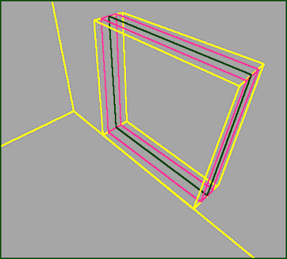

Making Windows (UT)
The correct way of making glass is one of the big debates of the Unreal Editing community. Briefly, techniques include:
- Just a sheet
- Sheet with semisolid ICH. further options are:
- size of the semisolid: snug fit / shrunken
- position of the semisolid: encasing the sheet / behind, in front
- sheet with a floating solid
- using BlockAll
- The ever-popular, Exploding Glass actor, incorporated into a 'glass' cube.
- Using a mover instead of the ICH, this way you can make the light appear to go through the window
(feel free to add to this list)
engine load considerations
Remember that looking through glass takes even more CPU than just having an empty space, so use glass judiciously.
textures
Good glass textures can be found in the "GenIn" texture package.
One way of making glass is to:
- Make transparent sheets to "box in" the area that will become glass. Clicking add special and selecting "transparent window" for your sheets is a good way to make a window sheet.
- Make an Invisible Collision Hull that fills the whole space that will be glass.
Methods
preparation
To make a window between two rooms, you will need:
- two rooms. Two subtracted cube brushes will do. Place them side by side, with a gap between them. 32 is a good size for a gap, though this is just a guideline: larger or smaller is fine too.
- create a cube brush, say 128x128x32. This will fit exactly between the two rooms.
- Subtract it. Now you have a hole in the wall that divides the two rooms.
adding glass
- Click on the sheet brushbuilder and make a sheet with the same dimensions as the window hole – for this example, that's 128x128.
- place it inside the window hole, so it divides the window hole brush in half.
- Choose a glass texture in the texture browser.
- Click the "Add Special" button in the toolbox.
At this point the various doctrines(!) differ.
just a sheet
This is the simplest method – if you've followed the above steps, you're done! The glass will not block players or projectiles, so this is only advisable if:
- the glass is out of a player's reach, for example a very high skylight
- there is solid wall (perhaps showing the sky) immediately behind the glass, for example the windows in DM-Tempest. 16 units or less and the player will not be able to tell that part of their collision cylinder has entered the glass.
snug fit
(i think it's fair to say that this is probably the favoured method. I just made the name up, so if anyone can think of a better description, change it – Tarquin)

|
- create a semisolid cube with the same cross-section as the window hole, but half the thickness – for this example, that's 128x128x16.
- place it in the window hole, centred so there's the same amount of space in each side. (see picture) (and arg, if someone wants to rewrite my lousy text, please please do)
floating solid
erm, this is one of the wackier ways of doing glass. it should get a mention, but personally I don't touch it with a bargepole
Flashman: For the record the 'Floating solid' method uses the same preparation steps as above, but in place of the semisolid sized 128x128x16, make a cube brush sized 126x126x16 and then Add special brush → (Solid, Invisible) in the same position as before. The reson for bringing the sides in alittle bit is that if the solid makes contact with the windowframe then you'll get HOM on the area of contact, as the engine thinks there's no surface there to render.
Arguments for / against this method:
- A bot can 'see' through a semisolid, but not a solid, for instance if your window points out to some lovely scenery, then you might want to stop the bots having to calculate any possible threat in this direction, as there's never going to be one, and likewise if it's a window into another part of your level it would be wise to let your bots 'see' through it in interests of fair play!

- Semisolids don't make BSP cuts, but in most cirumstances solids do. This is why semisolids are most commonly used for pillars. If you use solids for pillars/in your windows and find that you Node Ratio is high (generally more than 2) then switch to semisolids
N.B. The Node Ratio is the ratio of BSP leaf Nodes to the number of Polys in your map, and can be checked in the Build Window. For more information on Leaf Nodes see Node Count
using BlockAll
for small windows it can be easier to add a BlockAll actor centred on the sheet.
Using a Mover
Firstly create your window as described in a “snug fit” window but instead of using an ICH create a mover in exactly the same manner.
Now set the mover outside of your map (above your window opening) as keyframe 1.
Now in the mover properties there is a value called WorldRaytraceKey this is the keyframe used to calculate where your mover casts its shadow. If you set this to keyframe 1 and leave your mover in keyframe 0 there will be no shadow cast by your window, allowing light through the opening giving a more realistic appearance.
set it's InitialState to TriggerToggle and give the brush a tag. Do not give it a trigger for it!
How Mappers Make Their Glass
Bean: Here's my tutorial on making glass.
Example: Two 256x256x256 rooms(side by side) divided by a 128x128x64 cube "window enclosure". What I do is add a 128x128 sheet with a glass texture in the middle of the enclosure. Then, I add a 120x120 brush (basically, around minus 4-8 units of the original glass size) on both sides of the sheet (about 2-4 units apart from the sheet on each side). Then, I make all the surfaces of those brushes invisible and the brushes themselves semi-solid (ya gettin all this? ).
Craze: its not "my" way but i saw it in a level and liked it,how about to rooms 512x512x512 with a 32 unit gap, then make a hole 256x256x32 now you have a 256x256 hole thats 32 deep, then get a good texture and add a 255x255x32 brush and addit into the hole, then set it to transparent or whatever you want, there you now a (BSP's worst enemy) window that wont give you a hall of mirrors if its see threw.